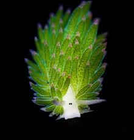
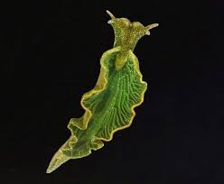
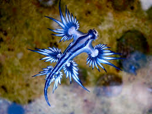
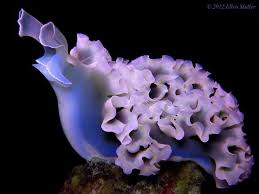

Morska Owieczka

Phyllodesmium Poindimiei

Elysia Chlorotica

Glaucus Atlanticus

Elysia Crispata
| Ślimaczek | Wygląd |
|---|---|
| Morska Owieczka | Hybryda owcy, królika i liścia |
| Phyllodesmium Poindimiei | Praktycznie same różowe macki |
| Elysia Chlorotica | Listek |
| Glaucus Atlanticus | Z góry wygląda jak latający smok |
| Elysia Crispata | Połączenie struktury mózgu i kolorowej owcy |